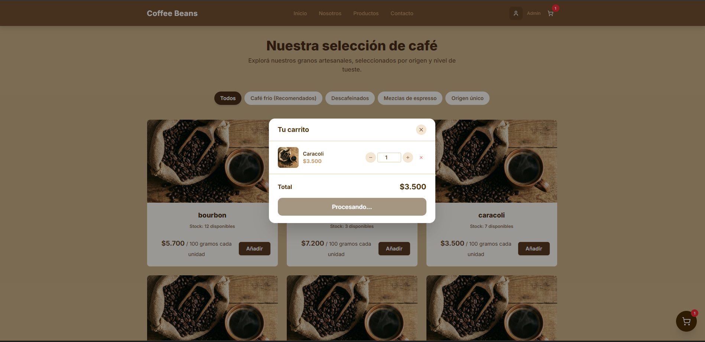
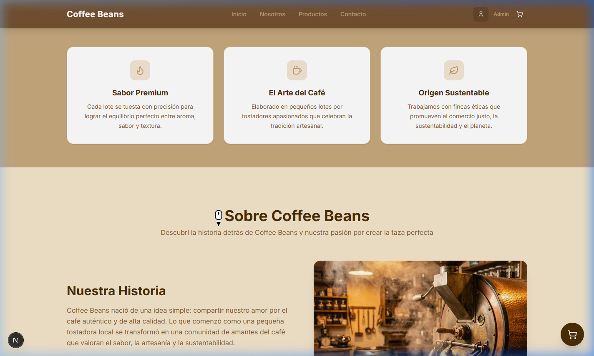
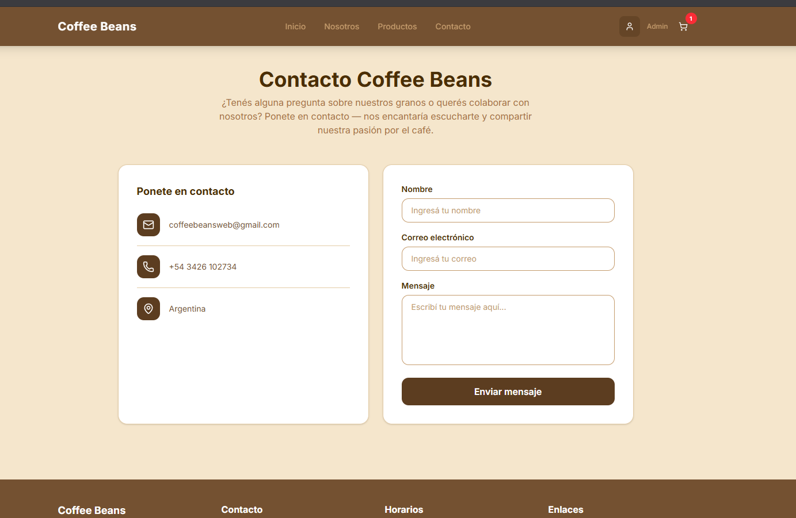

Coffee Beans
Informe Final de Práctica Profesional
Software de Gestión De Cafetería
Integrantes: Fidel Genrebert – Francisco Guerin
1. Informe Preliminar del Proyecto de Desarrollo Web
Empresa Simulada – Producción y Comercialización de Café
Situación Actual
Actualmente, la empresa simulada carece de presencia digital. Toda la información corporativa y la gestión de
pedidos se realizan a través de procesos tradicionales, como órdenes en papel en el local físico y llamadas
telefónicas para coordinar ventas o servicios de delivery.
Este modelo limita la visibilidad de la marca, reduce el alcance a nuevos clientes y dificulta la interacción
eficiente con los consumidores. Asimismo, la falta de una plataforma en línea impide que los usuarios puedan
consultar productos, conocer la identidad corporativa o realizar compras de manera remota.
Objetivo General
Desarrollar una página web funcional, moderna y atractiva a la mayoría del público para la empresa simulada de
producción y comercialización de café, con el fin de mejorar su presencia en línea, reflejar su identidad
corporativa y ofrecer una experiencia de usuario que simule un entorno de comercio electrónico completo.
Objetivos Específicos
- Diseñar una interfaz intuitiva y estéticamente coherente con la temática del café y la identidad de la
empresa.
- Implementar un catálogo de productos y un carrito de compras funcional para los usuarios.
- Desarrollar un sistema de registro e inicio de sesión de clientes y una sección “Quiénes Somos” con
información institucional.
- Implementar un sistema de contacto que permita a los usuarios enviar consultas, sugerencias o reclamos.
- Integrar un sistema de pagos online a través de una API externa (MercadoPago) para procesar las
transacciones de forma segura.
- Implementar un sistema de gestión interna (Panel de Administración) para el control de inventario, recetas
de productos, compras a proveedores y flujos de caja.
- Desplegar el sistema en un entorno de pruebas y posteriormente en un hosting accesible al público.
Alcance y Visión
El desarrollo de la página web está orientado a fortalecer la presencia digital de la empresa, evolucionando
hacia
un enfoque de CRM/ERP liviano. El sistema permite no solo la venta online, sino la gestión
profesional de suministros, clientes y analítica de negocio. El proyecto abarca desde el Storefront para el
cliente final hasta el Backoffice para la administración centralizada.
Requerimientos Funcionales
- Autenticación y Perfiles:Registro e inicio de sesión con
roles dinámicos (Cliente, Administrador) y perfiles detallados
- Catálogo y Carrito: Navegación de productos con filtros avanzados y gestión de pedidos
dinámica con retiro en local.
- Módulo de Inventario: Control de stock en tiempo real con deducción automática
basada en recetas y alertas de stock crítico.
- Gestión de Operaciones Separadas: Módulos independientes para Compras a
Proveedores y Ventas a Clientes para mayor claridad operativa.
- Listados y Filtros CRM: Implementación de búsqueda por texto libre, paginación y filtros
por rango de fechas y categorías en todas las tablas.
- Módulo de Arqueo de Caja:Registro de caja inicial, ingresos/egresos diarios y cierres
con reportes detallados.
- Dashboard Analítico: Visualización de KPIs clave (Ventas del mes, productos más vendidos,
margen bruto) y gráficos evolutivos.
- Información y Contacto: Sección institucional "Quiénes Somos" y formulario de contacto
directo.
- Pagos Seguros: Integración con MercadoPago para transacciones online protegidas.
- Auditoría: Historial de cambios y ajustes de stock con registro de motivos y responsable.
Requerimientos No Funcionales
- Usabilidad: Ofrecer una interfaz accesible, clara y adecuada para distintos tipos de
usuarios y edades, enfocada en la estética del sector cafetero.
- Compatibilidad: Garantizar funcionamiento en navegadores modernos (Google Chrome, Mozilla
Firefox, Microsoft Edge, Safari).
- Diseño Responsivo: El sitio web debe adaptarse a computadoras, tablets y smartphones,
garantizando una experiencia óptima en cualquier dispositivo.
- Coherencia Estética: Mantener identidad corporativa mediante una paleta de colores
café/tierra, tipografías modernas y estilo visual premium.
- Seguridad: Cifrado de contraseñas (BCrypt), autenticación mediante tokens (JWT) y
protección de rutas críticas.
- Tecnologías del Proyecto:
- Frontend: Next.js (arquitectura React modular), TypeScript para robustez de código
y Tailwind CSS para estilos modernos y responsivos.
- Backend: Java 17 con Spring Boot para la lógica de negocio escalable, Spring
Security para protección de datos y Hibernate/JPA para persistencia.
- Base de Datos: PostgreSQL como motor relacional, encargado del manejo de usuarios,
productos, stock, pedidos y auditoría.
- Hosting y Despliegue: Preparado para entornos de nube con el fin de garantizar
disponibilidad y escalabilidad.
2. Documentación de Diseño y Soporte
2.1. Diagrama de Casos de Uso
graph LR
C((Cliente))
A((Administrador))
subgraph Sistema ["Portal Coffee Beans"]
UC1(["Añadir/Eliminar del Carrito"])
UC2(["Registro / Login"])
UC3(["Completar Pago"])
UC4(["Gestionar Inventario / Stock"])
UC5(["Modificar Productos"])
UC6(["Login Panel Admin"])
UC7(["Gestionar Usuarios"])
UC8(["Gestionar Pedidos"])
end
C --- UC1
C --- UC2
UC2 -. extend .-> UC3
UC1 --- A
UC2 --- A
UC4 --- A
UC5 --- A
UC6 --- A
UC7 --- A
UC8 --- A
2.2. Especificación de Casos de Uso e Interfaces
CU01: Gestión de Venta Manual (Administrador)
Flujo principal:
- Selección de Productos: El administrador abre el modal de "Nueva Venta" y elige los
productos.
- Validación de Stock: El sistema valida que la cantidad solicitada no supere el
stock actual.
- Selección de Cliente: Se elige un usuario registrado de la lista desplegable.
- Confirmación: Se confirma la operación, se descuenta el stock y se registra la
venta.
Alternativo:
- Selección de Productos (Stock insuficiente): El sistema detecta la falta de stock y
muestra el mensaje: "Cantidad supera el stock disponible".
- Confirmación (Cliente No Seleccionado): El sistema resalta el campo en rojo e
informa: "Debe seleccionar un cliente antes de confirmar".
- Proceso de Venta (Error de Conexión): Muestra un aviso de error: "No se pudo
procesar la venta, intente de nuevo".
Postcondición: Venta registrada y stock actualizado.
Interfaz: Modal "Nueva Venta", buscadores de productos y clientes.
CU02: Administración de Catálogo y Recetas (BOM)
Flujo principal:
- Acceso al Listado: El administrador navega a la sección de productos.
- Filtrado y Búsqueda: Aplica filtros por categoría o proveedor para localizar ítems.
- Edición: Modifica precios, imágenes o visibilidad del producto.
- Guardado: El sistema actualiza la base de datos y refleja los cambios en la web
pública.
Alternativo:
- Datos Inválidos (Precio): Si se ingresa 0 o negativo, el sistema muestra: "El
precio debe ser mayor a cero".
- Subida de Archivo (Imagen Pesada): Si supera los 2MB, indica: "La imagen es
demasiado grande".
Postcondición: Catálogo actualizado para el cliente final.
Interfaz: Tabla de productos, formularios de edición.
CU03: Control de Inventario Auditado
Flujo principal:
- Visualización de Niveles: El admin revisa la tabla de inventario y alertas de stock
mínimo.
- Selección de Ajuste: Elige un producto para realizar entrada o salida manual.
- Registro de Motivo: Ingresa cantidad y justificación del ajuste.
- Actualización: El sistema impacta el stock y guarda el log de auditoría.
Alternativo:
- Ingreso de Cantidad (Valor nulo): Si no se ingresa un número, el sistema muestra:
"Debe ingresar una cantidad válida".
- Confirmación de Ajuste (Sin motivo): Si se intenta guardar sin justificación, el
sistema bloquea la acción e informa: "Debe indicar el motivo del ajuste".
Postcondición: Stock corregido y auditado.
Interfaz: Tabla de Auditoría/Inventario.
CU04: CRM y Gestión de Usuarios
Flujo principal:
- Consulta de Perfil: Busca un usuario para ver su historial y puntos.
- Modificación de Estado: Cambia el estado a "Inactivo" o "Activo".
- Gestión de Roles: Asigna o quita privilegios de administrador.
Alternativo:
- Cambio de Estado (Auto-Desactivación): El sistema impide deshabilitar al admin en
uso: "No puede cambiar su propio estado".
- Gestión de Roles (Sin Administrador): El sistema bloquea el cambio si se intenta
dejar el negocio sin admins: "Debe haber al menos un administrador activo".
Postcondición: Perfil de usuario actualizado.
Interfaz: Tabla de Usuarios con toggle de estados.
CU05: Venta Online y Checkout (MercadoPago)
Flujo principal:
- Acceso a Checkout: El cliente presiona "Pagar".
- Generación de Cobro: El sistema crea la preferencia en MercadoPago.
- Proceso de Pago: El usuario ingresa sus datos en la pasarela segura.
- Confirmación y Retiro: El sistema confirma la orden, vacía el carrito y notifica
que el pedido está listo para ser retirado en el local de forma inmediata.
Alternativo:
- Proceso de Cobro (Pago Rechazado): Si la pasarela falla, el sistema muestra:
"Tarjeta rechazada" y permite intentar con otro medio.
- Checkout (Sesión Expirada): Si el token JWT venció, redirige al login indicando:
"Su sesión ha expirado".
- Confirmación (Stock Agotado): Si el stock cambia durante el pago, informa: "Ítem ya
no disponible" y cancela la orden.
Postcondición: Orden de venta generada.
Interfaz: Carrito de compras, pasarela MercadoPago.

Proceso de pago integrado con MercadoPago (Sandbox)
CU06: Gestión de Compras e Insumos
Flujo principal:
- Inicio de Orden: Selecciona proveedor y fecha de compra.
- Carga de Ítems: Ingresa costos y cantidades de los suministros recibidos.
- Confirmación: Al finalizar, el sistema aumenta el stock de los productos/insumos
automáticamente.
Alternativo:
- Selección de Proveedor (Inactivo): El sistema oculta o bloquea proveedores
deshabilitados: "Proveedor no habilitado para compras".
- Carga de Costos (Cero/Nulo): El sistema exige el valor de compra: "El costo
unitario es obligatorio".
Postcondición: Stock de insumos incrementado.
Interfaz: Formulario de "Compras".
CU07: Navegación y Carrito
Flujo principal:
- Exploración: Navega el catálogo con scroll infinito o paginación.
- Filtrado: Usa la barra lateral para buscar cafés específicos.
- Adición: Agrega productos al carrito flotante.
Alternativo:
- Consulta de Catálogo (Sin Stock): El botón de compra se deshabilita y muestra la
etiqueta: "Sin Stock" en rojo.
- Filtros (Sin Resultados): El sistema informa al usuario: "No encontramos productos
para esta categoría".
Postcondición: Productos listos para checkout.
Interfaz: Catálogo público y Carrito.
CU08: Dashboard y Análisis de Reportes
Flujo principal:
- Consulta de Dashboard: El admin entra a la sección de analítica.
- Filtrado de Fechas: Selecciona el rango (hoy, semana, mes).
- Análisis: Revisa el ticket promedio y el total de ingresos.
Alternativo:
- Filtro de Calendario (Rango Inválido): Si la fecha final es previa a la inicial, el
sistema bloquea la búsqueda y muestra la advertencia.
- Gráficos (Sin Operaciones): Si no hay ventas registradas, muestra un marcador de
posición: "Sin datos para el periodo seleccionado".
Postcondición: Información estratégica visualizada.
Interfaz: Gráficos y tarjetas de KPI.
CU09: Sección Institucional y Contacto
Flujo principal:
- Navegación: El usuario accede a "Nosotros" para conocer la historia de la marca.
- Contacto: Dirige al formulario de contacto, ingresa datos y mensaje.
- Envío: El sistema valida los campos y confirma la recepción de la consulta.
Alternativo:
- Formulario incompleto: El usuario intenta enviar sin completar campos obligatorios,
el sistema resalta los errores.
- Error de red: El envío falla por problemas de conectividad, se notifica al usuario
con un mensaje de error.
Postcondición: Mensaje de contacto enviado al administrador.
Interfaz: Página institucional y Formulario de Contacto.


CU10: CRM - Historial de Compras de Clientes
Flujo principal:
- Selección de Cliente: El admin busca un cliente en el panel CRM.
- Acceso a Historial: Abre la pestaña de "Historial de Compras".
- Detalle: Visualiza todas las órdenes pasadas, montos y estados de cada transacción.
Alternativo:
- Sin historial: Si el cliente no tiene órdenes, se muestra: "Este cliente todavía no
realizó compras".
- Error de carga: El sistema no puede recuperar el historial, muestra: "Error al
cargar la actividad del cliente".
Postcondición: Auditoría de comportamiento de compra visualizada.
Interfaz: Modal de Detalle de Cliente (Tab Historial).
CU11: Registro de Usuarios
Flujo principal:
- Acceso: El usuario selecciona "Registrarse" en el navbar.
- Datos: Completa formulario con nombre, email y contraseña.
- Procesamiento: El sistema cifra la clave y crea el perfil de cliente asociado.
Alternativo:
- Email duplicado: Si el correo ya existe, muestra: "El correo electrónico ya se
encuentra registrado".
- Claves no coinciden: El sistema valida la segunda clave e informa la discrepancia
al usuario.
Postcondición: Usuario registrado con rol "CLIENTE".
Interfaz: Formulario de Registro.
CU12: Autenticación y Login
Flujo principal:
- Ingreso: El usuario ingresa email y contraseña.
- Validación: El backend verifica las credenciales vía Spring Security.
- JWT: El servidor emite un token JWT de sesión.
Alternativo:
- Datos incorrectos: El sistema informa: "Credenciales de acceso inválidas".
- Cuenta inactiva: Si el usuario fue dado de baja, informa: "Su cuenta se encuentra
deshabilitada, contacte al administrador".
Postcondición: Acceso concedido según el rol.
Interfaz: Formulario de Login.
2.3. Diagrama de Clases (Arquitectura Backend Central)
classDiagram
direction TB
class rol {
idRol: cliente, administrador
gestionarUsuarios()
gestionarPedidos()
gestionarInventario()
emitirCompras()
}
class usuario {
id, nombre, email, contraseña
iniciarSesion()
registrarse()
}
class venta {
id, total
añadirProducto()
eliminarProducto()
calcularTotal()
}
class detalleVenta {
cantidad, id, precio, producto, subtotal
calcularSubtotal()
generarNumeroOrden()
}
class compra {
fecha, id, total, usuario
confirmarCompra()
cancelarCompra()
calcularTotal()
}
class detalleCompra {
cantidad, id, precio, producto, subtotal
calcularSubtotal()
}
class proveedor {
direccion, email, nombre, id
añadirProducto()
eliminarProducto()
}
class inventario {
id, stockMinimo, stockActual, stockMaximo
actualizarStock()
}
class producto {
id, nombre, descripción, precio, cantidad
obtener precio()
modificar precio()
actualizar()
}
class insumoReceta {
Long id
BigDecimal descuentoCascada
vincularBom()
}
class movimientoStock {
id, cantidad, tipo, motivo
registrarMovimiento()
obtenerHistorial()
}
class movimientoCaja {
id, monto, tipo, descripcion
registrarEntrada()
registrarSalida()
}
class caja {
id, monto_actual
abrirCaja()
cerrarCaja()
}
class movimientoCuenta {
id, monto, tipo
registrarMovimiento()
obtenerSaldo()
}
class cliente {
email, puntos_fidelidad
canjearPuntos()
sumarPuntos()
}
class categoria {
id, nombre, tipo
asignarCategoria()
listarProductos()
}
class gastoInterno {
id, descripcion, monto, fecha
registrarGasto()
}
class notificacion {
id, mensaje, leido
marcarComoLeida()
enviarAlerta()
}
class metodoPago {
id, nombre
validarMetodo()
}
class estadoOperacion {
id, nombre, color
cambiarEstado()
}
rol "1" -- "1..*" usuario
usuario "1" -- "1..*" venta
usuario "1" -- "0..*" compra
venta "*" -- "1" metodoPago
venta "*" -- "1" estadoOperacion
compra "*" -- "1" estadoOperacion
venta "1" -- "1..*" detalleVenta
detalleVenta "*" -- "1" producto
detalleVenta "*" -- "1" inventario
compra "1..*" -- "1" proveedor
compra "1" -- "1..*" detalleCompra
detalleCompra "*" -- "1" producto
detalleCompra "1" -- "1" inventario
producto "1" -- "1" inventario
producto "1" -- "*" insumoReceta : "receta"
insumoReceta "*" -- "1" inventario : "usa_stock"
inventario "1" -- "*" movimientoStock
caja "1" -- "*" movimientoCaja
caja "1" -- "*" gastoInterno
usuario "1" -- "*" notificacion
producto "1" -- "*" notificacion : "alerta_stock"
usuario "1" -- "0..1" cliente
usuario "1" -- "*" caja : "gestiona"
cliente "1" -- "*" movimientoCuenta
categoria "1" -- "*" producto
categoria "1" -- "*" proveedor
inventario "1" -- "1" caja
2.4. Diagrama de Implementación de Tablas (DER)
erDiagram
USUARIOS ||--o| CLIENTES : "perfil_cliente"
USUARIOS ||--o{ VENTAS : "gestion_admin"
USUARIOS ||--o{ COMPRAS : "gestion_admin"
USUARIOS ||--o{ CAJA : "abierta_por"
ESTADOS_OPERACION ||--o{ VENTAS : "define_estado"
METODOS_PAGO ||--o{ VENTAS : "se_paga_con"
ESTADOS_OPERACION ||--o{ COMPRAS : "define_estado"
CLIENTES ||--o{ VENTAS : "realiza_compra"
CATEGORIAS ||--o{ PRODUCTOS : "clasifica"
PROVEEDORES ||--o{ PRODUCTOS : "provee"
PROVEEDORES ||--o{ COMPRAS : "suministra"
CATEGORIAS ||--o{ PROVEEDORES : "agrupa"
PRODUCTOS ||--o{ INSUMOS : "es_producto_final"
PRODUCTOS ||--o{ INSUMOS : "usa_insumo"
PRODUCTOS ||--o{ MOVIMIENTOS_STOCK : "log_auditoria"
USUARIOS ||--o{ NOTIFICACIONES : "recibe"
PRODUCTOS ||--o{ NOTIFICACIONES : "alerta_de"
CAJA ||--o{ GASTOS_INTERNOS : "paga"
CAJA ||--o{ MOVIMIENTOS_CAJA : "historial_dinero"
CLIENTES ||--o{ MOVIMIENTOS_CUENTA : "historial_de"
VENTAS ||--o{ DETALLE_VENTAS : "tiene_items"
DETALLE_VENTAS }|--|| PRODUCTOS : "producto_vendido"
COMPRAS ||--o{ DETALLE_COMPRAS : "tiene_items"
DETALLE_COMPRAS }|--|| PRODUCTOS : "producto_comprado"
USUARIOS {
Long id PK
String nombre_usuario
String rol "Admin, Cliente"
Boolean activo
}
CLIENTES {
Long id PK
String email
Decimal puntos_fidelidad
Long usuario_id FK
}
CATEGORIAS {
Long id PK
String nombre
String tipo "PRODUCTO/PROVEEDOR"
}
PRODUCTOS {
Long id PK
String nombre
Decimal precio
Decimal stock_actual
Decimal stock_minimo
Long categoria_id FK
}
INSUMOS {
Long id PK
Decimal cantidad
Long id_producto_final FK
Long id_insumo FK
}
MOVIMIENTOS_STOCK {
Long id PK
Decimal cantidad
String tipo "ENTRADA/SALIDA"
String motivo "VENTA, COMPRA, MERMA"
Long producto_id FK
}
PROVEEDORES {
Long id PK
String nombre
String cuit_taxid
Decimal saldo_cuenta
Long category_id FK
}
VENTAS {
Long id PK
Decimal total
Long cliente_id FK
Long usuario_id FK
Long estado_id FK
Long pago_id FK
}
DETALLE_VENTAS {
Long id PK
Decimal cantidad
Decimal precio_unitario
Long venta_id FK
}
COMPRAS {
Long id PK
Decimal total
Long proveedor_id FK
Long estado_id FK
}
ESTADOS_OPERACION {
Long id PK
String nombre
String color
}
METODOS_PAGO {
Long id PK
String nombre
}
DETALLE_COMPRAS {
Long id PK
Decimal cantidad
Decimal costo_unitario
Long compra_id FK
}
CAJA {
Long id PK
Decimal monto_actual
Long usuario_id FK
}
NOTIFICACIONES {
Long id PK
String mensaje
Boolean leido
Long usuario_id FK
}
GASTOS_INTERNOS {
Long id PK
String descripcion
Decimal monto
DateTime fecha
}
MOVIMIENTOS_CUENTA {
Long id PK
Decimal monto
String tipo "DEBITO/CREDITO"
Long cliente_id FK
}
MOVIMIENTOS_CAJA {
Long id PK
Decimal monto
String tipo "INGRESO/EGRESO"
String descripcion
Long caja_id FK
}
2.5. Documentación de Pruebas y Validación (QA)
Escenario 1: Seguridad y Acceso (JWT)
- Caso de Prueba: Verificación de autenticación con Token.
- Procedimiento: Intento de acceso a
/api/admin/dashboard/kpi sin
cabeceras.
- Resultado de Prueba: El sistema retorna
401 Unauthorized o redirige a
login.
- Estado: Aprobado
Escenario 2: Lógica de Negocio - Stock en Tiempo Real
- Caso de Prueba: Integridad de movimientos en cascada (BOM).
- Procedimiento: Realizar una venta de un producto compuesto y verificar reducción de
insumos.
- Resultado de Prueba: Se valida descuento proporcional basado en la receta
configurada.
- Estado: Aprobado
Escenario 3: Integración de Pagos - MercadoPago Sandbox
- Caso de Prueba: Ciclo completo de pago exitoso.
- Procedimiento: Simular compra de 1kg de Café con tarjeta de prueba en Sandbox.
- Resultado de Prueba: El sistema recibe el webhook de "approved", registra la venta
y vacía el carrito.
- Estado: Aprobado
Escenario 4: UX/UI - Registro de Clientes
- Caso de Prueba: Validación de duplicados y creación de perfil.
- Procedimiento: Intentar registrar un email ya existente y luego uno nuevo.
- Resultado de Prueba: Bloqueo del email duplicado y creación exitosa del registro
con vinculación de perfil.
- Estado: Aprobado
Escenario 5: Analítica - Filtros de Dashboard
- Caso de Prueba: Consistencia de datos en reportes temporales.
- Procedimiento: Aplicar filtro de fecha "Última Semana" y contrastar contra total de
ventas.
- Resultado de Prueba: Los KPI (Ticket promedio, Ingresos) se recalculan
dinámicamente según el rango.
- Estado: Aprobado
Escenario 6: Gestión de Stock Crítico - Alertas
- Caso de Prueba: Activación de banderas de reposición.
- Procedimiento: Reducir el stock de un producto por debajo de su "Stock Mínimo"
configurado.
- Resultado de Prueba: El sistema resalta el ítem en rojo en la tabla de inventario y
genera una alerta visual.
- Estado: Aprobado
Escenario 7: Seguridad - Control de Estado de Usuario
- Caso de Prueba: Restricción de acceso a cuentas desactivadas (Baja Lógica).
- Procedimiento: Cambiar estado a "Inactivo" desde el admin e intentar login con esa
cuenta.
- Resultado de Prueba: El sistema rechaza la autenticación informando que la cuenta
está deshabilitada.
- Estado: Aprobado
Escenario 8: Integridad de Reportes - Consolidación de Ventas
- Caso de Prueba: Sumatoria mixta (Manual + Online).
- Procedimiento: Registrar una venta física y una por web en el mismo día.
- Resultado de Prueba: El reporte diario del Dashboard refleja con exactitud la suma
de ambos canales de venta.
- Estado: Aprobado
Escenario 9: Reglas de Fidelización - Canje de Puntos
- Caso de Prueba: Aplicación de descuentos por puntos acumulados.
- Procedimiento: Realizar una compra utilizando los puntos de fidelidad de un cliente
frecuente.
- Resultado de Prueba: El sistema descuenta correctamente el monto equivalente y
actualiza el saldo de puntos.
- Estado: Aprobado
Escenario 10: Persistencia de Sesión - Carrito Persistente
- Caso de Prueba: Recuperación de estado tras refresco o logout.
- Procedimiento: Añadir ítems al carrito, cerrar sesión y volver a ingresar.
- Resultado de Prueba: Los productos permanecen en el carrito gracias a la
persistencia en base de datos vinculada al usuario.
- Estado: Aprobado
Escenario 11: Auditoría - Trazabilidad de Ajustes Manuales
- Caso de Prueba: Registro detallado de cambios en inventario (Log).
- Procedimiento: Realizar un ajuste manual de stock indicando un motivo de "Rotura".
- Resultado de Prueba: Se genera una entrada en la tabla de auditoría con fecha,
hora, admin responsable y el motivo especificado.
- Estado: Aprobado
3. Informe Tecnológico
Frontend: Next.js + TypeScript
Se implementó una arquitectura basada en Next.js que permite renderizado híbrido y una
navegación fluida. El uso de TypeScript garantiza la integridad de los datos mediante
tipado estático, reduciendo errores en tiempo de ejecución. Para el diseño, se utilizó Tailwind
CSS, lo que permite una interfaz responsiva y altamente personalizada sin sobrecargar el
bundle del cliente.
Backend: Spring Boot 3.x
El núcleo del sistema está desarrollado en Java 17 utilizando Spring
Boot. Se adoptó una arquitectura en capas (Controlador, Servicio, Repositorio) para
asegurar el desacoplamiento de la lógica de negocio. Se hace uso intensivo de anotaciones como
@Transactional para garantizar la atomicidad de las operaciones críticas (ventas y ajustes
de stock).
Seguridad: JWT & BCrypt
La protección de la plataforma se basa en Spring Security. Se implementó autenticación
JWT (JSON Web Tokens) para el manejo de sesiones sin estado (Stateless), permitiendo
una escalabilidad superior. Las contraseñas se protegen mediante el algoritmo BCrypt,
garantizando que los datos sensibles nunca se almacenen en texto plano.
Persistencia: PostgreSQL & Hibernate
Como motor de base de datos se eligió PostgreSQL por su robustez y soporte para
transacciones complejas. La interacción se realiza mediante Hibernate (JPA), lo que
permite un mapeo objeto-relacional (ORM) limpio y facilita la portabilidad y el mantenimiento del
esquema de datos.
Integraciones: MercadoPago API
Para el módulo de E-commerce, se integró la SDK de MercadoPago, permitiendo un flujo de
cobro seguro y profesional que incluye notificaciones por Webhooks para la actualización automática del
estado de las ventas.